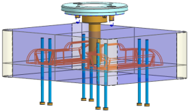
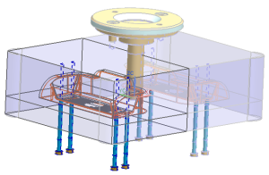

在这一步，将把顶杆与模具部件接触的区域进行修剪。
右击图形窗口背景并选择渲染样式→局部着色。
注意到顶杆未被修剪到部件表面。

点击注塑模向导工具条上的顶杆后处理 。
选择任意一个顶杆。
在顶杆后处理对话框的设置组中，清除另存为不重复组件复选框。
当您清除另存为不重复组件复选框时，您就指定了四个顶杆是相同部件的实例，一个实例化的部件只需要一个修剪特征。
如果您选中了另存为不重复组件复选框，则顶杆将被另存为四个唯一的部件，每个部件需要进行单独修剪。
点击确定。

将把顶杆修剪至匹配型芯镶块面。
未修剪错误体(false body)。
将视图恢复至前视图方向，并调整窗口显示。
在装配导航器中：
将 cardholder_top 设为工作部件
找到节点 cardholder_dm_037，并选中它的复选框以显示模架(数字后缀可能会不同)
选择文件→全部保存。